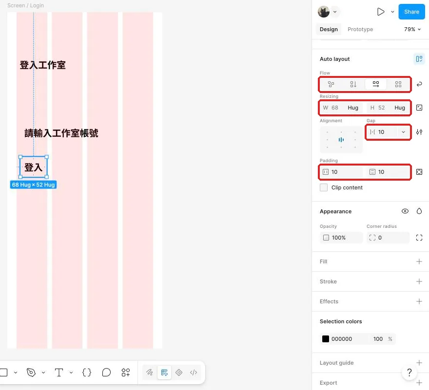
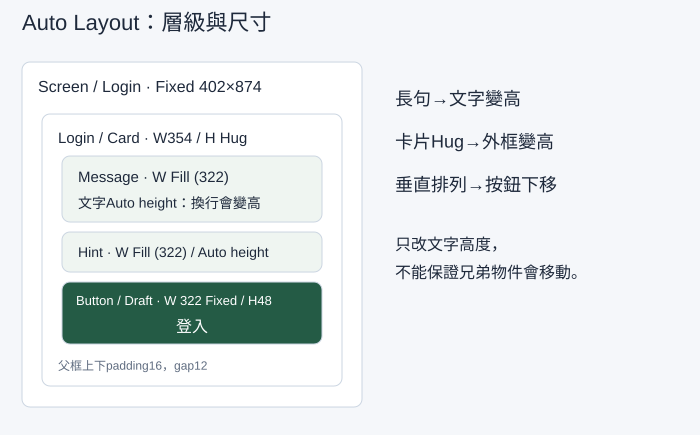
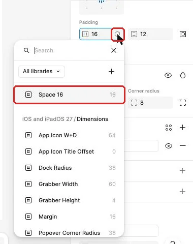
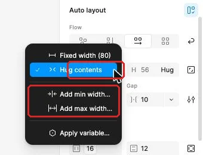

讓文字變長時，容器與按鈕一起排好
工作室的登入提示可能從一行變成多行，這堂讓卡片跟著內容長高，按鈕也能維持正確間距。
從對齊好的登入內容繼續
工作室的登入畫面已經有共同邊界，但真正使用時，提示文字不會永遠只有一行。密碼規則可能變長，錯誤訊息可能需要補上修正方法，之後也可能加入帳號範例。若訊息、提示與按鈕只是分別放在畫布上，文字增加時就會蓋住下一個物件。這堂要把它們組成能回應內容變化的容器。
先找出上次做好的手機登入卡片，確認卡片可用寬度已對齊格線。開啟本堂起始材料，先認識這次要調整的訊息、提示、按鈕與卡片層級；完成操作後，用完成檢查表核對長句、增刪子層與窄版測試。若手上沒有格線與響應式比較，先回到安排格線與 Constraints，依本堂規格表補做約 20～30 分鐘。這些物件都留在同一份設計檔中，下一次會直接把其中的按鈕轉成共用元件。
這次會同時處理兩種變化：內容高度改變，以及容器寬度改變。前者檢查文字換行後能否推開按鈕，後者檢查畫面變窄時，子層是否能使用父容器剩餘空間。
先分清楚：文字長高和卡片長高是兩件事
這一節要理解不同設定作用在哪一層，因為 Auto Layout 失效時，問題通常在於設定放錯物件，而非某個數值。文字層的 Auto height 讓文字框隨著行數增加高度；父容器的 Hug contents 則讓外框包住所有子層、間距與內距。兩者一起使用，長句才會推動下面的按鈕。
Auto Layout 可以把父容器想成一個會排隊的盒子。方向設為 Vertical 時，子層由上到下排列；Gap 控制相鄰子層之間的距離；Padding 控制內容和盒子邊緣的留白。當上方文字增加一行，父容器重新計算高度，下方按鈕自然往下移。
| 設定 | 放在哪一層 | 解決的問題 | 做對時會看到 |
|---|---|---|---|
| Auto height | 文字層 | 句子換行後末尾被裁掉 | 文字框隨行數增高 |
| Vertical | 父 Auto Layout Frame | 子層各自漂在畫布上 | 訊息、提示、按鈕由上到下排列 |
| Gap | 父容器 | 相鄰內容距離不一致 | 每組相鄰子層保持同一間距 |
| Padding | 父容器 | 內容貼住卡片邊緣 | 四周留白穩定 |
| Hug contents | 父容器高度 | 卡片固定高度而裁切內容 | 卡片包住所有子層 |
| Fill container | 子層寬度 | 子層沒有使用可用空間 | 文字或按鈕填滿父容器內部 |
| Fixed | 已知尺寸的容器 | 需要穩定的外部基準 | 畫面或卡片寬度保持指定值 |
例如登入卡片寬度已由格線決定，就可以保持 Fixed；卡片高度會受訊息行數影響，因此設為 Hug contents。卡片裡的訊息與提示使用 Fill container，讓它們使用父容器扣除左右 Padding 後的空間；按鈕則維持 322 px 寬。當子層設為 Fill container，父層在同一方向會自動變成 Fixed，這是 Figma 用來確定可分配空間的正常結果。
層級比畫面位置更重要。兩個物件即使看起來上下相鄰，只有位於同一個 Auto Layout 父層時，內容變化才會帶動彼此。判斷時先看 Layers 的縮排，再看右側設定；這比手動拖動到漂亮位置更能證明版面真的會回應內容。
尺寸模式還要分方向判斷。同一張卡片可以在水平方向保持固定寬度，在垂直方向包住內容；訊息文字則可在水平方向填滿容器，在垂直方向隨行數長高。把「寬」和「高」分開說明，會比只記 Hug、Fill 或 Fixed 三個名稱更容易找到正確設定。
間距也需要共同規則。本課使用 4、8、12、16、24、32 這組 4 的倍數，涵蓋圖示和文字的貼近距離、同一群組內的間隔、卡片內距與區塊之間的留白。規律的數列能讓畫面節奏一致，也讓工程師看到設計時能快速對照。這不代表所有地方都用同一個距離；距離越小，兩個內容看起來越屬於同一組，距離越大，越能表示段落切換。
判斷時可以問兩個問題：這個物件的空間由誰提供？內容增加時誰要跟著改變？卡片寬度由手機格線提供，所以有明確基準；文字高度由句子行數決定，所以需要自動增加；按鈕位置由父容器的排列決定，所以跟在前一個子層之後。每個答案都對應一個層級和方向。
示範：把既有內容轉成會長高的卡片
這一節會把既有登入卡片原地轉成 Auto layout。所有主線尺寸、文字與層級集中在規格表，步驟只引用名稱，方便你把注意力放在父子關係與變化結果。
| 類型 | 圖層名 | 規格 | 內容或用途 |
|---|---|---|---|
| 手機畫面 | Screen / Login | 402 × 874 | 登入畫面外層 |
| 畫面標題 | Screen / Heading | x 24、y 64；套用 Type / Page title | 「登入工作室」；位於卡片外 |
| 訊息文字 | Message | 套用 Type / Body、Auto height、Fill container | 「登入後檢視待處理的任務。」 |
| 輔助文字 | Hint | 套用 Type / Supporting、Auto height、Fill container | 「請輸入工作室帳號」 |
| 按鈕文字 | Label | 套用 Type / Label | 「登入」 |
| 練習按鈕 | Button / Draft | x 16、W 322（Fixed）、H 48、水平 Padding 16、垂直 Padding 12、Gap 8（Space 8） | 把原本按鈕轉成水平 Auto layout；內容置中 |
| 登入卡片 | Login / Card | x 24、y 120、W 354、水平 Padding 16、垂直 Padding 16、Gap 12（後段綁成 Space 16、Space 12） | 把原本卡片轉成 Vertical Auto layout；Height Hug、白底；內含 Message、Hint 與按鈕 |
| 窄版卡片 | Login / Card 360 | W 312；按鈕暫時設為 Fill container | 放在手機畫面外，測試畫面變窄後的換行 |
- 在 Layers 確認
Screen / Heading位於登入卡片外，卡片裡已有Message、Hint與Button / Draft；完成後，畫面標題和卡片內容會顯示為不同層級。 - 選取原本的
Button / Draft（練習按鈕）按 Shift+A；完成後，右側會出現 Auto layout 設定，原有的Label仍留在按鈕裡。

- 按 Shift+A 後，Figma 會依原位置推算內距，數字和規格不同是正常的，照規格改回。先把 W 改回 322，並確認 X 為 16。再設左右置中與上下置中。把水平 Padding 設為 16，垂直 Padding 設為 12，再把 H 設為 48；完成後，白色「登入」會位在綠色按鈕中央，右側 W 會顯示 Fixed。
- 選取原本的
Login / Card（登入卡片）按 Shift+A；完成後，三個既有子層會依原順序排成垂直 Auto layout。寬度與內距會依原位置推算，接著照規格改。 - 依規格表把登入卡片的 Padding 改成 16、Gap 改成 12、W 改回 354，再把 Height 設為 Hug；完成後，右側會顯示指定的內距、間距與寬度。
- 確認
Message與Hint都是 Fill container 與 Auto height，若目前設定不同就改成這兩項；完成後，兩段文字會填滿 322 px 的卡片內側寬度，卡片高度會自動成為 150 px。
這裡先用數字設定子層間距與卡片內距。後段建立 Number 變數後，再把 Gap 綁成 Space 12，並把 Padding 綁成 Space 16。
- 在 Layers 展開登入卡片，確認
Message、Hint與Button / Draft是同層子物件，Label則在按鈕裡；完成後，圖層縮排會清楚呈現三層關係。 - 把訊息改成「密碼至少需要包含一個英文大寫字母與一個數字」；完成後，訊息會換行，卡片跟著長高，提示與按鈕向下移動。
- 把訊息改回短句，再切換一次長句；完成後，Gap、左右寬度與底部 Padding 都會保持一致。
短句測試可以用一個高度算式理解容器如何加總：上 Padding、訊息高度、提示高度、兩段 Gap、按鈕高度與下 Padding 合起來就是卡片高度。依規格表的短句狀態，計算為 16＋24＋12＋22＋12＋48＋16＝150。文字若多一行，只替換實際文字高度；其他間距會自動維持。

跟著做：增刪內容，再改變容器寬度
這一節要讓卡片經過幾種常見內容壓力。提示會比示範少，請先判斷該改文字層、父容器或外層畫面，再動手設定。 以下每次寫下紀錄時，都先用 T 在空白處點一下新建文字；點到既有文字會插進那段文字裡。
- 把訊息改成完整的帳號錯誤句，觀察換行、卡片高度與按鈕位置；完成後，三者應一起形成連續變化。
- 把
Hint拖到按鈕下方，再拖回原位；完成後，提示會跟著 Layers 順序移到按鈕下方，再回到訊息與按鈕之間。 - 刪除
Hint，觀察卡片收回空間，再使用 Undo 還原；完成後，提示會重新出現，卡片也會恢復原本高度。 - 複製登入卡片。把副本拖到手機畫面外的空白處，正式卡片留在畫面裡。在 Layers 把副本命名為
Login / Card 360，再依規格表縮小寬度。把副本裡的按鈕暫時改成 Fill container；完成後，手機畫面外會有一張變窄的測試副本，較長的訊息會在新的內側寬度換行，按鈕也會跟著變窄，正式卡片仍留在手機畫面裡。 - 在窄版副本中，直接在訊息的 W 欄輸入一個數字，例如 200，寬度就會變成 Fixed。記錄它和 Fill container 在換行上的差異；完成後，窄版副本的 W 會顯示 Fixed，正式卡片仍維持原本的寬度與填滿方式。
- 再次複製正式登入卡片。把副本拖到手機畫面外的空白處，正式卡片留在畫面裡。在這個測試副本中暫時固定卡片高度，加入長句觀察裁切；完成後，把高度恢復 Hug contents，手機畫面外的副本會重新完整顯示內容，正式卡片仍留在手機畫面裡。
- 對照短句、長句、提示改序與窄版四種結果，寫下每一次真正改變的是哪一層；完成後，你會有一份可用來排查的父子層紀錄。
接著做一次連續內容測試：依序輸入短提示、完整錯誤句與更長的密碼規則，每次都只改 Message 文字。觀察卡片底部和按鈕之間的關係，並確認左右寬度維持一致。這個測試能排除「剛好只有某一句看起來正常」的情況。測完把 Message 改回規格表的短句。
再從 Layers 把提示拖到按鈕下方，觀察排列順序改變後卡片是否仍包住所有內容；完成記錄後移回原位置。這一步練習的是子層排序，讓你知道 Auto Layout 會依圖層順序排版，而非依物件原本在畫布上的座標。
需要高度提示時再展開
先列出父容器的上內距、每個子層實際高度、相鄰 Gap 與下內距；子層增加時，也要多算一段新的相鄰間距。
把間距存成 Number 變數
目前登入卡片的 Gap 與 Padding 已經是 4 的倍數，但若每個欄位都各自輸入數字，後續仍可能出現 15、18 或 23 之類難以追蹤的間距。Number（數字）變數會把常用距離收進 Studio，套用後欄位會顯示帶外框的數字，日後也能從同一處更新。
| 變數 | 值 | 適合的關係 |
|---|---|---|
Space 4 | 4 | 圖示與很貼近的文字 |
Space 8 | 8 | 標籤內或同一群內容 |
Space 12 | 12 | 卡片內相鄰欄位 |
Space 16 | 16 | 卡片內距與主要群組 |
Space 24 | 24 | 不同內容區塊 |
Space 32 | 32 | 大段落或畫面區域 |
- 點左側圖示列的 Variables，先在左欄點自己的
Studio集合，再點 Create variable 並選 Number；完成後，表格會出現可輸入名稱與數值的新列。 - 建立
Space 4，輸入對應值，再按 Tab 移到下一欄；完成後，第一個間距變數會留在Studio。 - 依規格表建立其餘五個間距變數；完成後，顏色與間距會在同一集合中各自按名稱辨識。
- 回到畫布選取登入卡片，找到 Padding 的水平與垂直兩個欄位。把滑鼠移到水平欄右端，點變數圖示並選
Space 16。接著在垂直欄重複一次，讓水平、垂直兩欄各綁一次Space 16；完成後，水平與垂直 Padding 的數字都會出現外框，代表已綁定變數。

- 點 Gap 欄的 ▾，選 Apply variable…，再選
Space 12；完成後，Gap 的數字會出現外框，相鄰子層保持 12 px 間隔。 - 選取練習按鈕，把 Shift+A 預設的 Gap 10 改為 8，再點 Gap 欄的 ▾ → Apply variable… →
Space 8。按鈕只有一個子層，Gap 不影響外觀，但能讓間距保持同一組數列；完成後，按鈕 Gap 的數字會出現外框，登入卡片的 Padding 與 Gap 也都對應到規格表。
數字變數用在距離與必要尺寸，字級仍維持文字樣式管理。兩者分開後，調整間距不會意外改到文字角色，也不會把每個數字都塞進同一份清單。
用 Min 與 Max 守住元件寬度
Fill container 讓卡片使用父層可用空間，但桌面畫面一旦很寬，登入卡片也可能被拉成一條長帶，文字行長變得難讀。Min／Max 為 Auto layout 物件設定寬度界線：空間不足時仍可縮到合理下限，空間充足時則停在容易閱讀的上限。
- 按 F 建立一個桌面測試 Frame，再按 Shift+A 把它轉成 Auto layout。複製正式登入卡片，把副本放進測試 Frame，並將副本寬度設為 Fill container；完成後，正式卡片仍留在手機畫面裡，測試副本會跟著桌面測試 Frame 變寬。
- 選取登入卡片副本，點 W 欄的下拉箭頭，選 Add max width…，輸入 480；完成後，父層繼續拉寬時，副本會停在這個上限。

- 把桌面測試 Frame 拉窄再拉寬，觀察卡片何時開始變化、何時停止；完成後，你會確認 Max width 保護的是閱讀行長，而非固定畫面座標。
- 複製
Button / Draft，把按鈕副本放進桌面測試 Frame，再把 W 設為 Hug contents。從 W 欄下拉選 Add min width…，輸入 160；完成後，副本仍會保留 160 px 寬，正式按鈕不會出現 Min width。 - 用 T 在
Rules旁的空白處點一下新建文字；點到既有文字會插進那段文字裡。記下卡片副本何時停在 Max width，以及按鈕副本如何守住 Min width，再刪除整個桌面測試 Frame；完成後，測試紀錄仍留在畫布上，正式卡片仍位於手機畫面，正式按鈕維持 W 322（Fixed）且沒有 Min width。
卡片上限選 480，是為了避免桌面上出現過長的單行內容，同時保留比手機卡片更寬的彈性。按鈕下限選 160，則讓 Hug contents 的短標籤仍保有穩定份量。這兩個值只套在隔離副本上；換成自己的題目時，要依內容和畫面檢查後留下理由。
讓任務標籤在空間不足時自動換行
待處理清單之後會同時出現優先順序、對象與期限等標籤。固定排成一列時，只要文字變長或卡片變窄，最右邊的標籤就會超出範圍。Wrap 讓水平 Auto layout 在可用寬度不足時，把後面的子層移到下一列。
- 建立五個短文字標籤：「高優先」「客戶」「本週」「交付」「待確認」，每個文字外面用 Shift+A 包成小 Frame。將每個小 Frame 分別改名為它顯示的標籤文字，例如「高優先」。選取每個小 Frame，在 Fill 按 ＋ 後套用
Primary Soft，垂直 Padding 改綁Space 4，水平 Padding 改綁Space 8。把五個標籤左右排成一列；完成後，五個標籤會有一致的淺底與內距，Layers 也會以「高優先」等標籤文字顯示各小 Frame 名稱。 - 同時選取五個標籤，再按 Shift+A 建立 Auto layout，命名為
Tags。若 Flow 顯示 Grid 或垂直，點水平那一格；完成後，Tags裡的五個標籤會保持水平一列。 - 在 Auto layout 的 Flow 按鈕右側點 Wrap；完成後，
Tags具備多列排列能力。 - 選取
Tags，按右鍵選 Create component；完成後，它會成為可從 Assets 重複使用的標籤列主元件。 - 把
Tags的寬度縮窄，直到最後一個標籤移到下一列；完成後，容器會增加高度，標籤之間仍維持設定的 Gap。 - 把其中一個標籤改成較長的「等待客戶確認」，再測一次寬版與窄版；完成後，換行由真實內容與可用空間共同決定。
測完把標籤改回原字，並把 Tags 寬度恢復成能排成一列的寬度。
- 把
Tags主元件放在主線 Section 裡、手機畫面外的空白處；完成後，標籤列會留在主線範圍內，又不會和登入畫面混在一起。做共用元件那一堂建立Components後，再把它移入元件區。
這排 Tags 會在做清單那一堂放進任務列。主元件保留文字可改、能換行的結構；屆時清單列裡的使用處會命名為 Row / Tags，讓後續修改從來源同步。
看兩版長訊息，判斷哪一版真的能適應內容
這一節比較兩種合理的寬度策略。版本一的登入卡片在桌面上設定 Max width，畫面再寬也維持容易閱讀的行長，兩側會留下較多空間。版本二讓卡片 Fill container，充分使用桌面主區，欄位較多或內容需要左右並排時能放下更多資訊；文字行長也會跟著增加。
請說明哪一類內容適合版本一、哪一類內容適合版本二。判斷時要提到內容量、欄位排列、閱讀行長與所在版面；再補一句你會用什麼畫面變化測出目前策略的界線。
看完自己的判斷再展開
兩版都有適用情境。單欄登入或長段說明適合設定 Max width，讓視線不必橫跨太遠；多欄資料、篩選工具或需要並排比較時，可讓卡片使用較多可用寬度。實際選擇要用窄版、一般桌面與寬版逐一測試，確認內容沒有過度換行或拉得太散。
卡住時，先找出哪一層沒有回應
這一節把現象對應到設定位置。先觀察是文字沒長高、卡片沒長高，還是子層不在正確隊伍裡，再去修改相應層級。
| 看到的現象 | 通常的原因 | 怎麼修 |
|---|---|---|
| 長句末尾被裁掉 | 文字尺寸模式仍是固定高度 | 選取文字層，到 Layout 改為 Auto height |
| 文字變高但按鈕不動 | 兩者不在同一個垂直父層 | 在 Layers 把兩者放進同一張 Auto Layout 卡片 |
| 卡片裁掉最下方內容 | 父容器高度設為 Fixed | 選取卡片，把高度改成 Hug contents |
| 新提示沒有參與排列 | 圖層在卡片外或忽略排列 | 把提示移入卡片，確認與其他子層同層 |
| 子層沒有 Fill container | 所選物件缺少 Auto Layout 父層 | 先確認父子層級，再選子層設定寬度 |
| 按鈕文字偏向一側 | 按鈕父層沒有置中 | 選取按鈕外框，檢查水平與垂直對齊 |
| Padding 旁找不到變數圖示 | 滑鼠尚未移到數值欄右端 | 選取 Auto layout 物件，再把游標移到對應欄位右側 |
| Max width 沒有限制效果 | 物件目前沒有隨父層變寬 | 先確認寬度模式與父層空間，再拉寬父層測試 |
| 標籤超出容器 | Tags 仍是單列水平排列 | 選取標籤父層，在 Flow 右側開啟 Wrap |
修復後要重新切換一次短句與長句。只有當內容變化能再次帶動卡片與按鈕，才表示修到真正原因，而非只把某一張畫面拖回好看的位置。
換你做：你的題目
從你的畫面清單挑出這次對應的畫面。接著用間距變數完成自己題目的清單卡片，以需求資料中最長的那筆測試長高，再替卡片設定寬度上下限，做一排會自動換行的標籤。下面三欄提供可採用的對應；若你的畫面清單採用不同名稱或拆法，以自己的需求初稿為準。
三個題目的建議對應
| 預約 | 點餐 | 會員 |
|---|---|---|
| 卡片放服務名、所需時間、價格與狀態；用「大型犬全套洗澡美容」測試長說明，標籤可呈現體型、時間或預約狀態。 | 卡片放品名、價格、簡短說明與狀態；用「季節限定・柚香蜂蜜冷萃咖啡」測試長名稱，標籤可呈現分類、冰熱或供應狀態。 | 卡片放品名、所需點數與狀態；用「青田書店二十週年紀念帆布袋（附手寫書籤）」測試長名稱，標籤可呈現點數區間、上架或兌換狀態。 |
要達成的條件：
- 這次做的畫面在你的畫面清單上；清單沒有的，先補進清單並寫一句理由。
- 題目指定的卡片內容位於同一個垂直 Auto layout，Layers 看得出父子關係。
- Padding 與 Gap 套用自己建立的間距變數，選擇能說明內容群組關係。
- 最長資料完整顯示，文字增加行數時卡片高度會配合變化。
- 卡片設定合理的 Min／Max 寬度，並用窄版與寬版留下選擇理由。
- 標籤列開啟 Wrap，空間不足或標籤變長時能移到下一列。
合格的結果要能通過這些自我檢查：
- 需求頁中最長的名稱或說明完整可讀，沒有蓋住狀態或超出卡片。
- Layers 中卡片內容與標籤都在正確父層內，而非只在畫布上靠近。
- 卡片變窄時沒有縮小文字，改由換行與容器高度吸收變化。
- 拉寬桌面測試區時，卡片會在 Max width 停止；縮窄時不低於可用的 Min width。
- 換回短資料時，卡片與標籤列會收回多餘高度，間距節奏維持一致。
真的卡住再看：提示
先用 Layers 確認長文字、狀態與標籤都在卡片內，再分別檢查文字的 Auto height、卡片的 Hug contents，以及標籤父層的 Wrap。
把會長高的卡片交給下一個共用元件
回到工作室登入情境，你現在有一張能承受長句、提示增刪與窄版畫面的登入卡片。訊息層負責自己的換行，父容器負責包住內容，按鈕則在同一個排列中維持位置。下一次會把這顆按鈕從單一畫面中的練習物件，轉成可放到登入、詳情與確認畫面的共用來源。
完成條件：
- 登入卡片以 Vertical Auto Layout 排列訊息、提示與按鈕。
- 訊息使用 Auto height，卡片高度使用 Hug contents。
- 長句、增加提示與改窄畫面時，內容都不重疊。
- 固定寬度與 Fill container 的比較紀錄能說明差異。
Tags裡五個小 Frame 以「高優先」等標籤文字命名，並能在寬度不足時自動換行。
想一想：為什麼只把訊息文字設為 Auto height，仍不足以保證下面的按鈕會移動？
展開參考答案
Auto height只改變文字框自身高度；訊息和按鈕還需要位在同一個垂直Auto Layout父層中，父層以Hug contents重新計算高度，後面的子層才會跟著移動。
本堂查證來源
來源查證：2026-11-02。